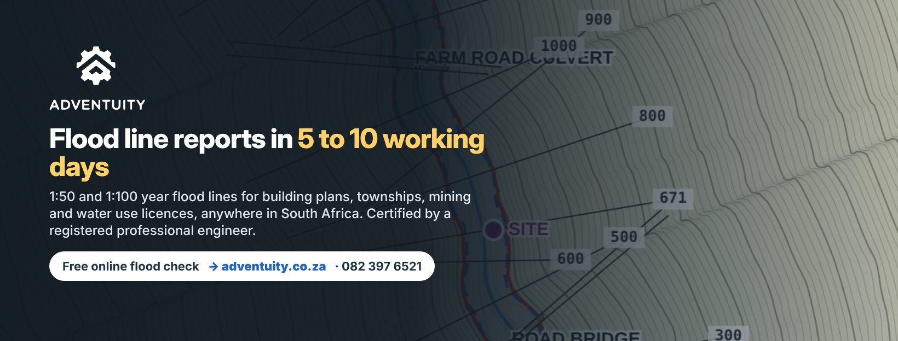

Adventuity flood lines: posts, videos and captions
Everything needed to post or share the service: tap a file to open it (long-press on a phone to save), copy the caption, or send it straight to a WhatsApp group or status. Posts are written for Facebook, Instagram, LinkedIn and TikTok; add the hashtags on Instagram and TikTok.



Facebook cover

Seven posts, in order
Post one every two or three days. Each has the image or video, the caption and a share button.
1. Launch: the video
Building near a river, spruit or dam? The municipality, DWS and your bank will ask where the 1:100 year flood line runs. We map the 1:50 and 1:100 year flood lines and hand you a signed report, A3 drawings on your survey and the CAD and HEC-RAS files, in 5 to 10 working days at a fixed fee. Certified by a registered professional engineer. Start with a free online flood check of any site: https://www.adventuity.co.za WhatsApp 082 397 6521

2. Free flood check
Is your site inside the 1:100 year flood line? Find out in two minutes. Type in the address or coordinates on adventuity.co.za and see whether the site is near a watercourse. If it is, request a fixed-fee quote and the flood line report follows in days. https://www.adventuity.co.za/#check


3. Town planners, surveyors and developers
Town planners, surveyors and developers: your layout needs a flood line before the municipality will look at it. Send us the erf number or the survey and you have a quote within one working day. You get the 1:50 and 1:100 year lines on your survey, the report DWS and the municipality expect, A3 plans and DXF files for your layout. SANRAL Drainage Manual hydrology, HEC-RAS-type hydraulics, bridges and culverts included, certified by a registered professional engineer. https://www.adventuity.co.za/flood-line-township-establishment/


4. Buying or selling near a river
Buying or selling near a river? Know the flood risk before the offer goes unconditional. Our pre-purchase flood risk letter shows where the property lies relative to the 1:50 and 1:100 year flood lines, on a plan, in 3 working days, for R2 500. Estate agents, bond originators and buyers use it to avoid surprises after transfer. https://www.adventuity.co.za/flood-risk-property-purchase/


5. Mining and water use licences
Mines, plants and tailings facilities: GN 704 keeps new infrastructure outside the 1:100 year flood line and above the flood level. Water use licence and EIA applications need the same lines. We produce the flood line study, drawings and files your EAP and DWS reviewer ask for, with the hydraulics of every bridge and culvert in the reach. Fixed fee, 10 working days from your survey. https://www.adventuity.co.za/flood-line-mining-gn704/
6. What is in a flood line report
What is in a flood line report? The hydrology (rainfall, catchment, peak flows), the hydraulic model of the river with its bridges and culverts, the 1:50 and 1:100 year flood levels at your site, the lines on your survey, and the engineer's certification. Plus DXF, HEC-RAS, KML and GeoJSON files so your planner, architect and investors can use it straight away. From R6 500. Quote within one working day: https://www.adventuity.co.za/#quote
7. Afrikaans
Vloedlynverslae vir bouplanne, dorpstigting en myne. 1:50- en 1:100-jaar vloedlyne, gesertifiseer deur 'n geregistreerde professionele ingenieur, in 5 tot 10 werksdae teen 'n vaste fooi. Gratis aanlyn vloedtoets van enige erf: https://www.adventuity.co.za · WhatsApp 082 397 6521